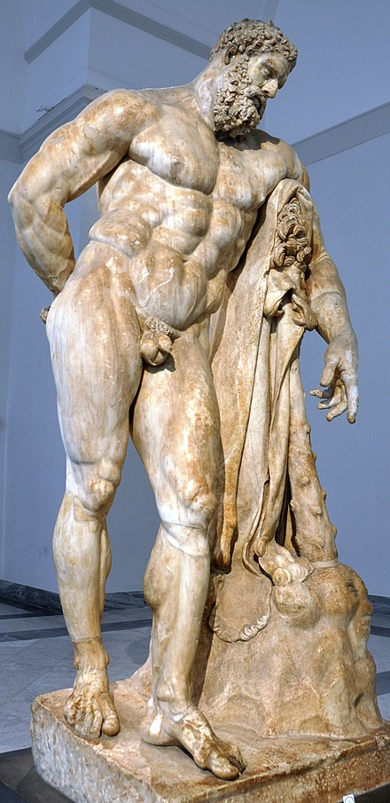
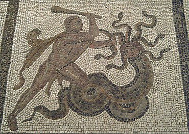
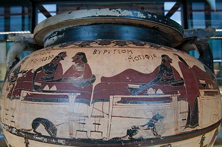
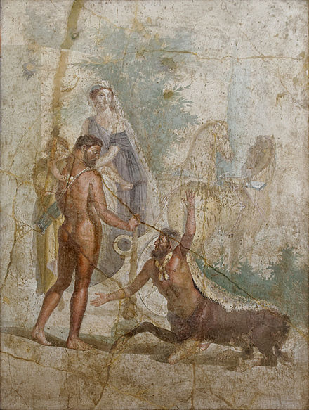

Heracles Heracles (/ˈhɛrəkliːz/ HERR-ə-kleez; Greek: Ἡρακλῆς, lit. "glory/fame of Hera"), born Alcaeus[1] (Ἀλκαῖος, Alkaios) or Alcides[2] (Ἀλκείδης, Alkeidēs), was a divine hero in Greek mythology, the son of Zeus and Alcmene, and the foster son of Amphitryon.[3] He was a great-grandson and half-brother (as they are both sired by the god Zeus) of Perseus, and similarly a half-brother of Dionysus. He was the greatest of the Greek heroes, the ancestor of royal clans who claimed to be Heracleidae (Ἡρακλεῖδαι), and a champion of the Olympian order against chthonic monsters. In Rome and the modern West, he is known as Hercules, with whom the later Roman emperors, in particular Commodus and Maximian, often identified themselves. The Romans adopted the Greek version of his life and works essentially unchanged, but added anecdotal detail of their own, some of it linking the hero with the geography of the Central Mediterranean. Details of his cult were adapted to Rome as well.
Origin
Many popular stories were told of his life, the most famous being The Twelve Labours of Heracles; Alexandrian poets of the Hellenistic age drew his mythology into a high poetic and tragic atmosphere.[4] His figure, which initially drew on Near Eastern motifs such as the lion-fight, was widely known.
Heracles was the greatest of Hellenic chthonic heroes, but unlike other Greek heroes, no tomb was identified as his. Heracles was both hero and god, as Pindar says heros theos; at the same festival sacrifice was made to him, first as a hero, with a chthonic libation, and then as a god, upon an altar: thus he embodies the closest Greek approach to a "demi-god".[4]
The core of the story of Heracles has been identified by Walter Burkert as originating in Neolithic hunter culture and traditions of shamanistic crossings into the netherworld.[5] It is possible that the myths surrounding Heracles were based on the life of a real person or several people whose accomplishments became exaggerated with time.[6]
Hero or God
Heracles' role as a culture hero, whose death could be a subject of mythic telling (see below), was accepted into the Olympian Pantheon during Classical times. This created an awkwardness in the encounter with Odysseus in the episode of Odyssey XI, called the Nekuia, where Odysseus encounters Heracles in Hades:
And next I caught a glimpse of powerful Heracles— His ghost I mean: the man himself delights in the grand feasts of the deathless gods on high ... Around him cries of the dead rang out like cries of birds scattering left and right in horror as on he came like night
Ancient critics were aware of the problem of the aside that interrupts the vivid and complete description, in which Heracles recognizes Odysseus and hails him, and some modern critics deny that the verse's beginning, in Fagles' translation His ghost I mean ..., was part of the original composition: "once people knew of Heracles' admission to Olympus, they would not tolerate his presence in the underworld", remarks Friedrich Solmsen,[8] noting that the interpolated verses represent a compromise between conflicting representations of Heracles.
Cult
The ancient Greeks celebrated the festival of the Heracleia, which commemorated the death of Heracles, on the second day of the month of Metageitnion (which would fall in late July or early August). What is believed to be an Egyptian Temple of Heracles in the Bahariya Oasis dates to 21 BCE. A reassessment of Ptolemy's descriptions of the island of Malta attempted to link the site at Ras ir-Raħeb with a temple to Heracles,[9] but the arguments are not conclusive.[10] Several ancient cities were named Heraclea in his honor. A very small island close to the island of Lemnos was called Neai (Νέαι), from νέω which means I dive/swim, because Heracles swam there.[11]
Although the Athenians were among the first to worship Heracles as a god, there were Greek cities that refused to recognize the hero's divine status. There are also several poleis that merely provided two separate sanctuaries for Heracles, one recognizing him as a god, the other only as a hero.[12] This ambiguity helped create the Heracles cult especially when historians (e.g. Herodotus) and artists encouraged worship such as the painters during the time of the Peisistratos, who often presented Heracles entering Olympus in their works.[12]
Some sources explained that the cult of Heracles persisted because of the hero's ascent to heaven and his suffering, which became the basis for festivals, ritual, rites, and the organization of mysteries.[13] There is the observation, for example, that sufferings (pathea) gave rise to the rituals of grief and mourning, which came before the joy in the mysteries in the sequence of cult rituals.[13] Also, like the case of Apollo, the cult of Hercules had been sustained through the years by absorbing local cult figures such as those who share the same nature.[14] He was also constantly invoked as a patron for men, especially the young ones. For example, he was considered the ideal in warfare so he presided over gymnasiums and the ephebes or those men undergoing military training
There were ancient towns and cities that also adopted Heracles as a patron deity, contributing to the spread of his cult. There was the case of the royal house of Macedonia, which claimed lineal descent from the hero,[15] primarily for purposes of divine protection and legitimator of actions.
The earliest evidence that shows the worship of Heracles in popular cult was in 6th century BCE (121–122 and 160–165) via an ancient inscription from Phaleron.[14] After the 4th century BCE, Heracles became identified with the Phoenician God Melqart[16]
Oitaeans worshiped Heracles and called him Cornopion (Κορνοπίων) because he helped them get rid of locusts (which they called cornopes), while the citizens of Erythrae at Mima called him Ipoctonus (ἰποκτόνος) because he destroyed the vine-eating ips (ἀμπελοφάγων ἰπῶν), a kind of cynips wasp, there
Character
Extraordinary strength, courage, ingenuity, and sexual prowess with both males and females were among the characteristics commonly attributed to him. Heracles used his wits on several occasions when his strength did not suffice, such as when laboring for the king Augeas of Elis, wrestling the giant Antaeus, or tricking Atlas into taking the sky back onto his shoulders. Together with Hermes he was the patron and protector of gymnasia and palaestrae.[20] His iconographic attributes are the lion skin and the club. These qualities did not prevent him from being regarded as a playful figure who used games to relax from his labors and played a great deal with children.[21] By conquering dangerous archaic forces he is said to have "made the world safe for mankind" and to be its benefactor.[22] Heracles was an extremely passionate and emotional individual, capable of doing both great deeds for his friends (such as wrestling with Thanatos on behalf of Prince Admetus, who had regaled Heracles with his hospitality, or restoring his friend Tyndareus to the throne of Sparta after he was overthrown) and being a terrible enemy who would wreak horrible vengeance on those who crossed him, as Augeas, Neleus, and Laomedon all found out to their cost. There was also a coldness to his character, which was demonstrated by Sophocles' depiction of the hero in The Trachiniae. Heracles threatened his marriage with his desire to bring two women under the same roof; one of them was his wife Deianeira.[23]
In the works of Euripides involving Heracles, his actions were partly driven by forces outside rational human control. By highlighting the divine causation of his madness, Euripides problematized Heracles' character and status within the civilized context.[24] This aspect is also highlighted in Hercules Furens where Seneca linked the hero's madness to an illusion and a consequence of Heracles' refusal to live a simple life, as offered by Amphitryon. It was indicated that he preferred the extravagant violence of the heroic life and that its ghosts eventually manifested in his madness and that the hallucinatory visions defined Heracles' character.[2
 In "The Frogs," Heracles' stolid pragmatism foils Dionysus' rabid love of Greek tragedy, forcing him to attempt to explain it, providing dramatic exposition. ἦ μὴν κόβαλά γ᾽ ἐστίν, ὡς καὶ σοὶ δοκεῖ — "I swear it's all bullshit and you know it."